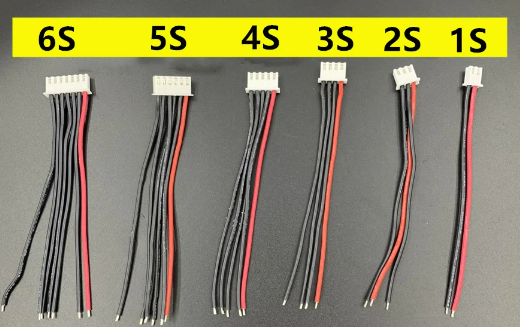
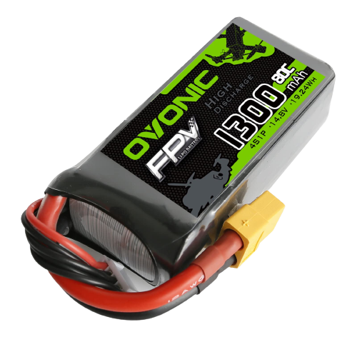

Kraft
Motorernas kraft och vilken du behöver
Drönar motorer kan ha många olika kraft nivåer som avgörs av många olika aspekt. Dem viktigaste aspekten är vikten av drönaren, hur snabb den ska vara, vad den ska användas till och vem som ska använda den. Dem primära krafterna är 4S - 6S och 1S - 2S. Betäckningarna för effekterna används både för batterier och motorer.

6S
6S motorer och 6S batterier är dem starkaste av sin typ. Du kan använda 6S batterier till mindre starka motorer men då får du inte ut hela effekten ur dem. Du kan också använda 6S motorer med svagare batterier men då blir det samma problem som med ett starkt batteri med svaga motorer. 6S är den starkaset typen av effekt man kan ha och därför så används dem på race drönare. Men dem är också väldigt högljuda så dem är inte rekomenderade till ifall du ska filma något där drönaren måste vara nära till exempel folkmassor eller nära djur.
4S
4S batterier är lite svagare batterier som används främst till att filma och spela in ljud från drönaren samtidigt. Detta främst för att motorerna på 4S effekt är relativt tysta och har inte lika mycket kraft, vilket gör dem lättare att styra. 4S är fortfarande ganska starkt jämfört med 6S men den har inte samma effekt.
